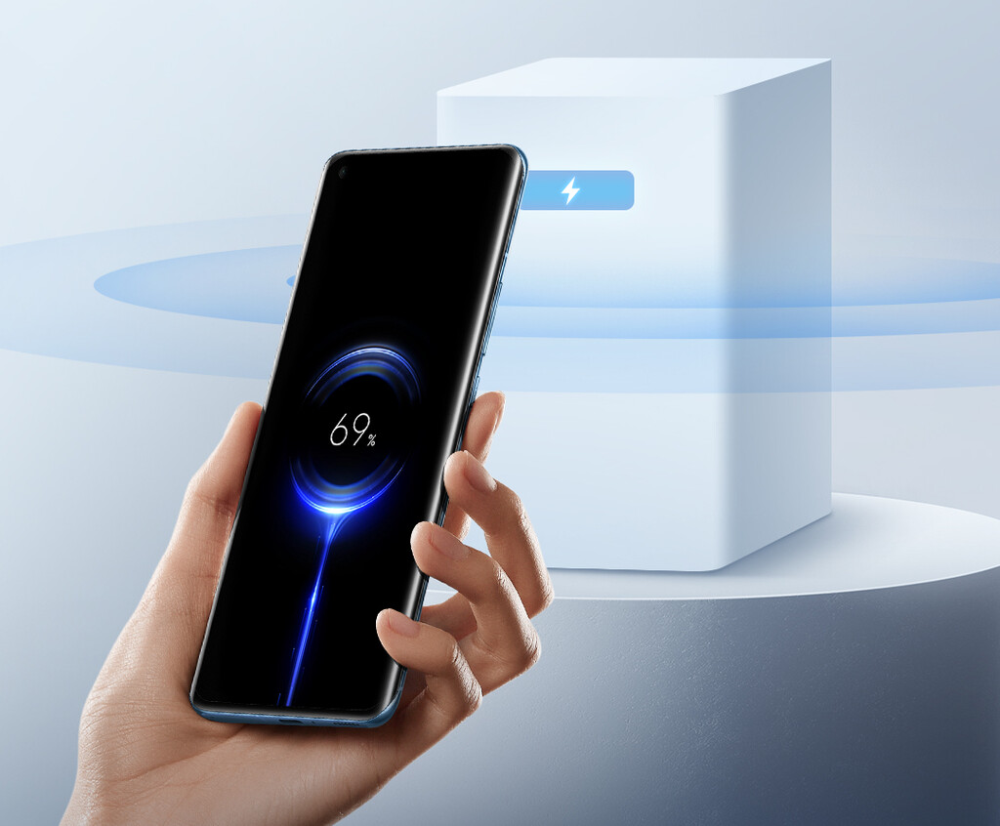

Xiaomi presenta Mi Air Charge
Xiaomi acaba de anunciar su propio sistema de carga inalámbrica a distancia: Mi Air Charge. Es decir, que no es necesario ni cables ni una base de carga, sino que el proceso de carga sucede de forma remota, a una distancia de "varios metros", y con una potencia de 5W, según asegura la compañía. Además, Xiaomi afirma que su tecnología es capaz de cargar varios dispositivos a la vez con una potencia de 5W y que "incluso los obstáculos físicos no reducen la eficacia de la carga". Es cierto que no es una velocidad demasiado alta, pero sí es un pequeño gran paso adelante. La compañía no ha confirmado que vaya a implementar esta tecnología en un móvil próximamente, pero sí ha dado detalles de su funcionamiento.
Xiaomi explica que el núcleo de esta tecnología se basa en el posicionamiento espacial y la transmisión de energía. La estación de carga desarrollada por la marca tiene cinco antenas de interferencia de fase que "pueden detectar con precisión la ubicación del smartphone". Una vez se ha detectado su ubicación, una serie de 144 antenas transmiten ondas milimétricas al teléfono mediante la formación de haces.